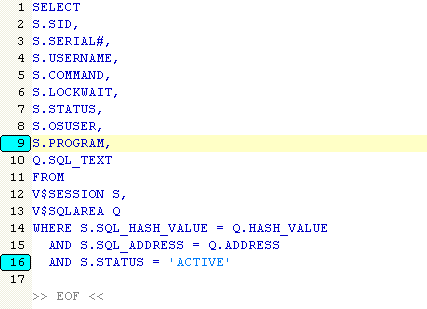

Delete all bookmarked lines defined with
Search / Toggle Bookmark menu item. It can be very useful when you want to
mark some code you will have to delete for a particular test.
For example, the following query with bookmarked lines :

will look like this after deleting bookmarked lines :